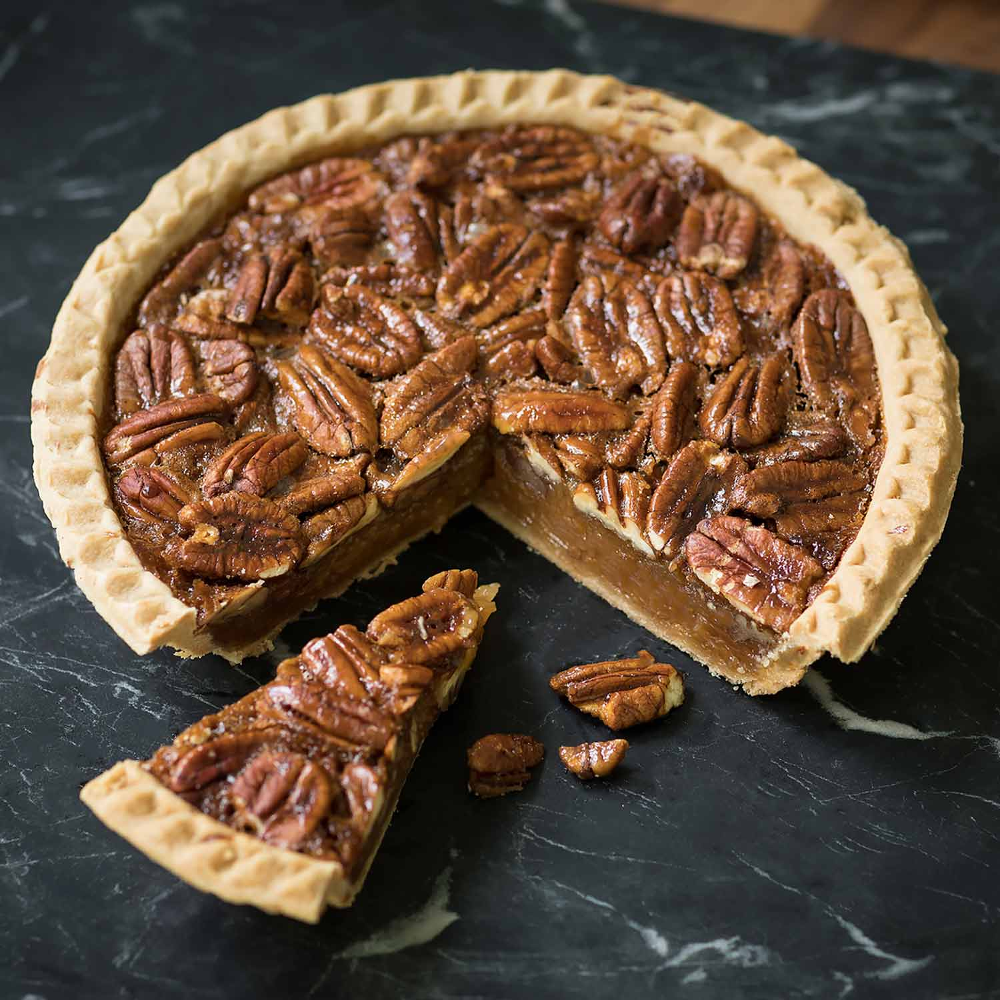

Pecan Pie

Description
Decadent pecan pie that will be a hit at any party
Ingredients
- 3 eggs
- 1 cup sugar
- 1/2 cup corn syrup
- 1/4 cup melted butter or oleo
- 1 cup pecans
Instructions
- Turn on oven and set at 375 degrees
- Beat eggs slightly in a two-quart bowl. Stir in sugar, corn syrup, and melted butter or oleo. Stir in pecans. Pour into unbaked shell.
Bake near center of oven 35 to 40 minutes, or until filling is slightly firm.
- Center of pie may look soft when pie is gently shaken, but will become firm when cool.
Back to top
Back to homepage